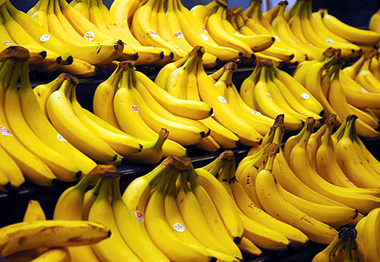

কলার পরিচিতি
কলা অনেকের কাছেই অনেক প্রিয় একটি ফল। আবার অনেকেই কলা খেতে চান না একেবারেই। বারো মাস
পাওয়া যায় বলে এবং দামে বেশ সস্তা বলে বেশ সহজলভ্য এই কলা। যারা কলা খান তারা কলা
শুধুমাত্র একটি ফল হিসেবেই খেয়ে থাকেন। এবং যারা খান না তারা কলাকে একটি ফল হিসেবেই
চেনেন। কিন্তু কলার আমাদের দেহের ওপর যে প্রভাব রয়েছে তা সম্পর্কে অনেকেই জানেন না।

অনেকেই জানেন না কলা আমাদের শারীরিক ও মানসিক স্বাস্থ্যের জন্য কতোটা উপকারী। প্রতিদিন
মাত্র একটি কলা আমাদের দেহকে অনেক বড় ধরণের রোগ থেকে মুক্তি দেয়ার ক্ষমতা রাখে।
কলা সারাবিশ্বব্যাপী জনপ্রিয় ফল যার ইংরেজি নাম Banana। সাধারণত উষ্ণ্ল জলবায়ুর দেশে
কলা ভাল জন্মে। তবে দক্ষিণ- পূর্ব এশিয়াই কলার উৎপত্তিস্থল হিসাবে পরিচিত।
বাংলাদেশ সহ পৃথিবীর বহু দেশে কলা অন্যতম প্রধান ফল। বাংলাদেশের নরসিংদী, মুন্সীগঞ্জ,
যশোর, বরিশাল, বগুড়া, রংপুর, জয়পুরহাট, কুষ্টিয়া, ঝিনাইদহ, মেহেরপুর, প্রভৃতি
এলাকায় কলা বেশি চাষ হয়ে থাকে। পার্বত্য এলাকায় বনকলা, বাংলাকলা, মামা কলাসহ বিভিন্ন
রকম বুনোজাতের কলা চাষ হয়।
কলার পুষ্টি উপাদান
প্রতি ১০০ গ্রাম পরিমাণ (খোঁসা ছাড়া)কলায় আছেঃ পানিঃ ৭০.১%, প্রোটিনঃ১.২%, ফ্যাট/চর্বিঃ ০.৩%, খনিজ লবণঃ ০.৮%, আঁশঃ ০.৪%, শর্করাঃ ৭.২%, ক্যালসিয়ামঃ ৮৫মিঃগ্রাঃ, ফসফরাসঃ ৫০মিঃগ্রাঃ, আয়রনঃ ০.৬মিঃগ্রাঃ, ভিটামিন বি কমপ্লেক্সঃ ৮মিঃগ্রাঃ, ক্যালরিঃ ১১৬।
কলার উপকারীতা
বিষণ্ণতা দূর করে কলা:
গবেষকগণ প্রায় ৪০০ মানুষের ওপর পরিক্ষা চালিয়ে প্রমান করেন যারা নিয়মিত কলা খান তারা
অন্যান্যদের তুলনায় প্রায় ৭৯% কম বিষণ্ণতায় ভোগেন। কলার মধ্যে রয়েছে ট্রাইপ্টোফেন যা
দেহে প্রবেশ করে সেরেটনিন উৎপন্ন করে। এতে মস্তিষ্কে ভালোলাগার অনুভূতির সৃষ্টি হয় এবং
বিষণ্ণতা কেটে যায়।
রক্ত স্বল্পতা দূর করে:
কলাতে রয়েছে প্রচুর পরিমাণে আয়রন যা দেহে রক্তের উৎপাদন বৃদ্ধি করে। যাদের রক্ত
স্বল্পতা অর্থাৎ অ্যানিমিয়া রয়েছে তাদের নিয়মিত কলা খাওয়া উচিৎ। প্রতিদিন একটি কলা
অ্যানিমিয়া থেকে মুক্তি দেবে।
উচ্চ রক্তচাপ নিয়ন্ত্রণে রাখে:
এই বারোমাসি ফলটির উচ্চ রক্তচাপ নিয়ন্ত্রণে রাখার অসাধারণ ক্ষমতা রয়েছে। কলায় রয়েছে
প্রচুর পটাশিয়াম এবং অনেক কম পরিমাণে লবণ যা উচ্চ রক্তচাপকে নিয়ন্ত্রণে রাখতে বিশেষ
ভূমিকা রাখে। প্রতিদিন কলা খেলে উচ্চ রক্তচাপের সমস্যা এবনফ স্ট্রোকের সম্ভাবনা
একেবারেই কমে যায়।
মস্তিস্কের কর্মক্ষমতা বৃদ্ধি করে:
ইংল্যান্ডের টুইকেনহ্যাম স্কুলের প্রায় ২০০ জন ছাত্রছাত্রীর ওপর প্রায় ১ বছর গবেষণা
চালিয়ে গবেষকগণ দেখতে পান, যে সকল ছাত্র প্রতিদিন কলা খান তাদের মনোযোগ, স্মৃতিশক্তি
এবং চিন্তা করার ক্ষমতা অন্যান্যদের তুলনায় প্রায় ৬৭% বেশি থাকে।
কোষ্ঠকাঠিন্য দূর করে:
কলায় রয়েছে প্রচুর পরিমাণে ফাইবার। এই ফাইবার সাধারণ হজমক্রিয়া উন্নত করে এবং
কোষ্ঠকাঠিন্যের সমস্যা দূর করতে সহায়তা করে।
দুর্বলতা রোধ করে:
মাথা ঝিম ঝিম করছে? কিংবা দুর্বলতার কারণে মাথা ঘোরানো ধরণের সমস্যা এক নিমেষে দূর করে
কলা। একটি কলা ও এক গ্লাস দুধে সামান্য মধু মিশিয়ে কলার মিল্কশেক তৈরি করে পান করুন।
এতে করে দেহে সুগারের ব্যালেন্স হবে, দেহের ডিহাইড্রেশন দূর হবে এবং সেই সাথে পেট
ঠাণ্ডা হয়ে যাবে।
অস্থিরতা দূর করে কলা:
অস্থিরতা এবং অশান্তি ধরণের নার্ভের সমস্যার সমাধান করে কলা। কলার ভিটামিন বি কমপ্লেক্স
নার্ভকে শান্ত থাকতে সহায়তা করে। এতে করে খুব দ্রুত কোনো ব্যাপারে অস্থির হয়ে উঠা এবং
অশান্তিতে ভোগা দূর হয়। তাই প্রতিদিন অন্তত একটি কলা খান।
অতিরিক্ত ওজনঃ
অনেকে মন খারাপ থাকলে/কাজের অতিরিক্ত চাপ থাকলে নিজের অজান্তেই জাংক ফুড খেতে থাকেন।
এরকম চাপে থাকলে আমাদের ব্লাড সুগার লেভেল ঠিক রাখা প্রয়োজন, যা প্রতি দুই ঘন্টায়
একটি কলা খেলে ঠিক রাখা সম্ভব।